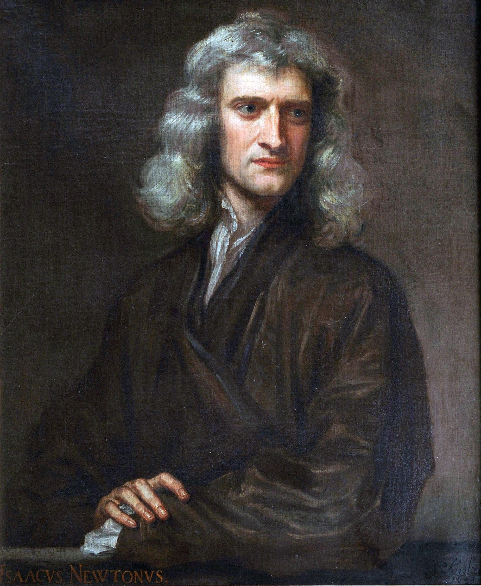
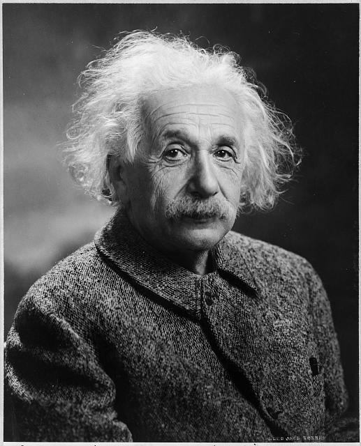

Energy plays an extremely important role both in physics and in our everyday lives. From sunlight, the motion of objects, heat, and electricity to the activities of living organisms, energy is involved in virtually every phenomenon in nature. But what exactly is this invisible, abstract physical quantity we call “energy”?
1. The History of the Concept of Energy
The word “energy” can be traced back to ancient Greece. In the fourth century BCE, the philosopher Aristotle used the Greek term energeia, meaning actuality or a state of being at work. However, this was a philosophical concept distinct from energy as understood in modern physics.
One of the key figures in the development of modern physical concepts was Isaac Newton (1642–1727). In 1687, Newton published Philosophiæ Naturalis Principia Mathematica (Principia), systematically presenting his three laws of motion and the law of universal gravitation.

Newton’s equation of motion is expressed as
which mathematically connects force with the motion of an object.
The concept of energy subsequently developed through investigations of momentum and vis viva by Leibniz and others, followed by nineteenth-century studies of heat and work. During the 1840s, research by Julius Robert Mayer, James Prescott Joule, and Hermann von Helmholtz helped establish the principle of conservation of energy. This principle states that the total energy of an isolated system, which exchanges no energy with its surroundings, remains constant.
Energy can be transformed among various forms, including motion, heat, and electricity, but the total energy of an isolated system is conserved.
2. Einstein and Energy
In the twentieth century, Albert Einstein (1879–1955) demonstrated the equivalence of mass and energy through work related to his special theory of relativity, published in 1905.

The relationship is expressed by one of the most famous equations in physics:
Here, \(E_0\) is rest energy, \(m\) is rest mass, and \(c\) is the speed of light in a vacuum. This equation shows that mass is a physical quantity intimately connected with energy.
Furthermore, in general relativity, completed in 1915, Einstein described gravity as the curvature of spacetime and expressed the relationship between that curvature and matter–energy through the Einstein field equations:
The term \(T_{\mu\nu}\) on the right-hand side is called the energy–momentum tensor (or stress–energy tensor). It provides a unified description of energy density, momentum density, energy flux, pressure, and shear stress.
Although these may appear to be different physical quantities, in a relativistic formulation using \(ct\) as the time coordinate, the components of the tensor share the dimensions of energy density.
Thus, in general relativity, the source of gravity is not mass alone but the physical state of matter and energy, including momentum, pressure, and stress.
3. Units and Dimensions of Energy
In the International System of Units (SI), energy is measured in joules (J).
Accordingly, the SI dimensions of energy are
where \(M\), \(L\), and \(T\) denote mass, length, and time, respectively.
The kilogram (kg) is one of the seven SI base units. But is treating mass as a fundamental dimension an absolute requirement of nature? In fact, physicists frequently use natural unit systems in which constants such as the speed of light \(c\) and the reduced Planck constant \(\hbar\) allow mass and energy to be expressed in common units.
Moreover, the same physical quantity—energy—is expressed in different units across different fields.
| Field | Unit | Equivalent in joules |
|---|---|---|
| Nutrition | 1 kcal | 4,184 J |
| Electric power | 1 kWh | 3,600,000 J |
| Atomic and particle physics | 1 eV | Approx. 1.602 × 10−19 J |
| Chemistry and thermodynamics | 1 erg | 10−7 J |
For example, the 2,000 kcal of energy we consume through food is equivalent to approximately 2.32 kWh of electrical energy. Light, heat, electricity, motion, and life itself are different phenomena, yet they can all be quantitatively compared using the common physical quantity of energy. Why, then, does energy appear in so many different physical phenomena?
4. Space-Time Unit System (ST Unit System)
In modern physics, there are approaches that regard energy as more fundamental than mass. I myself have long questioned why the kilogram (kg), a unit of mass, should be treated as a base unit. I initially wondered whether mass and electric charge could be described in a unified way by replacing the four conventional independent dimensions of mass, length, time, and electric current with three fundamental dimensions: Space, Time, and Energy. However, as I pursued this idea, I arrived at the conclusion that not only mass and charge, but even energy—which I had initially regarded as fundamental—could be expressed using just two dimensions: Space and Time. This is the basic idea behind the Space-Time Unit System (ST Unit System) that I propose (Ref).
Conventional dimensional analysis uses symbols such as \(L\) for Length, \(T\) for Time, and \(M\) for Mass. In the ST Unit System, however, I emphasize the more abstract concept of Space rather than the specific physical quantity Length, and therefore use \(S\). The proposed ST dimensions of charge, mass, and energy are as follows:
In this proposed system, the conversion of the ST energy unit into joules is expressed as follows:
It is intriguing, in an intuitive sense, that the proposed dimension of charge corresponds to an area divided by time, while that of mass corresponds to a second time derivative of volume. Energy has the highest dimensional powers of the three. Perhaps this higher-dimensional structure offers a way of thinking about how combinations of diverse physical quantities can be encompassed by energy.
5. The Photoelectric Effect and Solar Power
Einstein's equation expressing the equivalence of mass and energy is extremely famous, but photons, which have no rest mass, also carry energy.
Here, \(h\) is the universal Planck constant and \(\nu\) is the frequency of light. Einstein also played a central role in establishing this relationship between frequency and energy through his explanation of the photoelectric effect. It is a fascinating historical fact that Einstein, best known for relativity, received the Nobel Prize in Physics not for relativity but for his discovery of the law of the photoelectric effect.
Physicists and mathematicians working at the frontiers of their fields might regard the ST Unit System as little more than “a game of dimensional analysis” and find it unsatisfying. Yet many people outside science have an aversion to equations, and it is sometimes said that every additional equation in a book reduces its readership. When discussing energy, we can embrace “All You Need Is Equations” and appreciate mathematics as an art form. But we can also experience energy as an essential, practical quantity in everyday life. So, as the B-side of this “single,” I would like to discuss the practical applications of solar power, which also connect to Einstein's research.
Afterword
Ultimately, we living organisms cannot sustain our bodies without a continuous flow of energy. Perhaps “All You Need Is Energy” applies to sustaining the body, while “All You Need Is Love” applies to sustaining the spirit. Both support us with an all-embracing power that transcends our everyday understanding.
Reference
This page is an introductory overview of the proposed theory. Please refer to the publication below for the mathematical details and systematic discussion.
Space-Time Unit System for Unifying Gravitational Mechanics, Electromagnetism and Quantum Physics